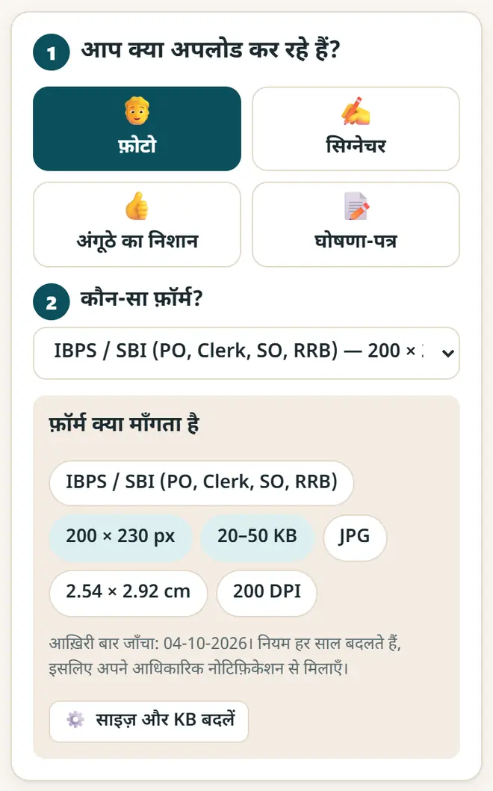
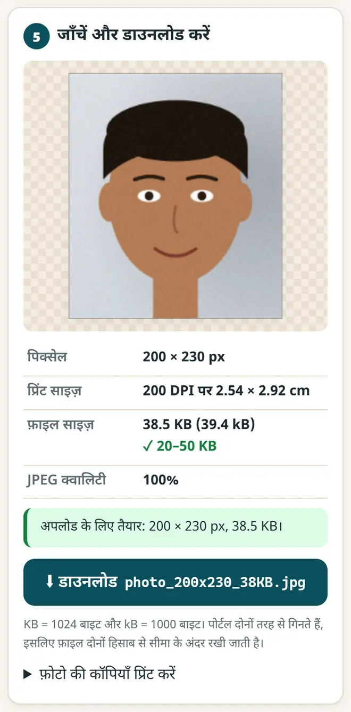

परीक्षा और नौकरी के फ़ॉर्म के लिए फ़ोटो और सिग्नेचर का साइज़ कैसे ठीक करें
फ़ोटो या सिग्नेचर कुछ KB बड़ा, छोटा या ग़लत आकार का हो तो ऑनलाइन फ़ॉर्म उसे लौटा देता है। यहाँ जानिए कि फ़ोन पर ही दोनों को फ़ॉर्म के नियमों के हिसाब से कैसे बनाएँ, वह भी किसी वेबसाइट पर भेजे बिना।
छोटा जवाब
फ़ॉर्म फ़ोटो और सिग्नेचर रीसाइज़र खोलें, “फ़ोटो” या “सिग्नेचर” दबाएँ, अपनी परीक्षा या फ़ॉर्म चुनें और तस्वीर जोड़ें। उसे फ़्रेम के अंदर खिसकाकर और ज़ूम करके ठीक बैठाएँ, फिर “डाउनलोड” दबाएँ। फ़ाइल दिखाई गई KB सीमा के अंदर बनती है। नंबर हमेशा अपने आधिकारिक नोटिस से मिलाएँ।
5 स्टेप में फ़ोटो और सिग्नेचर तैयार
-
चुनें कि क्या अपलोड करना है
फ़ॉर्म फ़ोटो और सिग्नेचर रीसाइज़र खोलें और “फ़ोटो”, “सिग्नेचर”, “अंगूठे का निशान” या “घोषणा-पत्र” दबाएँ।
-
अपनी परीक्षा या फ़ॉर्म चुनें
सूची से चुनें: बैंक (IBPS, SBI), UPSC, SSC, रेलवे (RRB), NEET, PAN कार्ड, ड्राइविंग लाइसेंस या कोई आम साइज़। “फ़ॉर्म क्या माँगता है” वाले बॉक्स में पिक्सेल, KB और DPI दिखते हैं। आपके नोटिस में कुछ और लिखा हो तो “साइज़ और KB बदलें” दबाकर वही नंबर भरें।

फ़ॉर्म चुनें: ऐप पिक्सेल, KB और DPI दिखा देता है। -
तस्वीर जोड़ें और क्रॉप ठीक करें
“तस्वीर चुनें” या “कैमरा” दबाएँ। तस्वीर को खिसकाएँ और ज़ूम करें, ताकि चेहरा अंडाकार गाइड के अंदर आ जाए। सिग्नेचर के लिए “स्याही तक ऑटो-क्रॉप” दबाएँ, इससे आसपास का ख़ाली काग़ज़ कट जाता है।
-
साफ़ और स्पष्ट बनाएँ
ज़रूरत हो तो ब्राइटनेस और कॉन्ट्रास्ट बदलें। “पृष्ठभूमि सफ़ेद करें” सादी हल्की दीवार को साफ़ सफ़ेद बना देता है। सिग्नेचर में ऐप परछाईं और काग़ज़ का रंग हटा देता है।
-
जाँचें और डाउनलोड करें
नतीजे में पिक्सेल और फ़ाइल का साइज़ दिखता है, और ऐप बताता है कि फ़ाइल अपलोड के लिए तैयार है या नहीं। “डाउनलोड” दबाएँ और वही फ़ाइल फ़ॉर्म में अपलोड करें। अपनी असली फ़ोटो भी सँभालकर रखें।

तैयार फ़ाइल, उसके पिक्सेल और KB के साथ।
फ़ोटो रिजेक्ट न हो, इसके लिए सुझाव
- फ़ोटो: दिन की रोशनी में सादी सफ़ेद या हल्की दीवार के सामने खड़े होकर सीधे कैमरे की ओर देखें। टोपी या काला चश्मा न पहनें।
- सिग्नेचर: सादे सफ़ेद काग़ज़ पर उसी रंग की स्याही से करें जो फ़ॉर्म माँगता है (ज़्यादातर काली)। फ़ोटो ठीक ऊपर से लें और अपनी परछाईं न पड़ने दें।
- कुछ फ़ॉर्म अब फ़ोटो कैमरे से लाइव लेते हैं और सिर्फ़ सिग्नेचर अपलोड करवाते हैं। पहले नोटिस पढ़ लें।
- साइज़ हर फ़ॉर्म में और हर साल बदलते हैं। ऐप के साइज़ सिर्फ़ शुरुआत के लिए हैं; आख़िरी बात आपकी परीक्षा का आधिकारिक नोटिस ही है। दस्तावेज़ की छोटी PDF चाहिए तो PDF कंप्रेस और JPG से PDF इस्तेमाल करें।
नए मुफ़्त टूल और हिंदी में AI के पाठ पाएँ
हमारी ईमेल लिस्ट से जुड़ें: नए मुफ़्त ऐप, नई गाइड और AI पर हिंदी वीडियो पाठ की जानकारी आपको मिलती रहेगी। कोई स्पैम नहीं।
सिर्फ़ वयस्कों (18+) के लिए। आप कभी भी नाम हटवा सकते हैं।
हम ये टूल क्यों सुझाते हैं
- सबके लिए मुफ़्त: न विज्ञापन, न साइन-अप, न कोई पेड प्लान।
- प्राइवेट: आपकी फ़ाइलें और जानकारी आपके अपने डिवाइस पर ही रहती हैं।
- फ़ोन, लैपटॉप या स्मार्टबोर्ड पर चलते हैं, और एक बार खुलने के बाद बिना इंटरनेट भी।
- हिंदी समेत 12 भाषाओं में।
वीडियो से सीखना पसंद है? हमारे YouTube चैनल पर AI और मुफ़्त टूल्स के हिंदी पाठ देखें।
अक्सर पूछे जाने वाले सवाल
SSC, UPSC या बैंक फ़ॉर्म में फ़ोटो और सिग्नेचर का साइज़ कितना होना चाहिए?
यह फ़ॉर्म और साल पर निर्भर करता है, इसलिए एक ही जवाब नहीं है। ऐप हर परीक्षा के आम तौर पर माँगे जाने वाले साइज़ भर देता है और बताता है कि उन्हें आख़िरी बार कब जाँचा गया, लेकिन आपको उन्हें अपने आधिकारिक नोटिस से मिलाना ही है। फ़र्क़ हो तो “साइज़ और KB बदलें” से बदल लें।
फ़ोटो को 20 KB से 50 KB के बीच कैसे करें?
ऐसा फ़ॉर्म चुनें जिसकी यही सीमा हो, या “अपना साइज़” चुनकर अपने नोटिस से चौड़ाई, ऊँचाई और KB भरें। ऐप सीमा के अंदर आने वाली सबसे अच्छी क्वालिटी चुन लेता है।
क्या मेरी फ़ोटो कहीं अपलोड होती है?
नहीं। सारा काम आपके ब्राउज़र के अंदर होता है, इसलिए फ़ोटो और सिग्नेचर आपके डिवाइस से बाहर नहीं जाते। साइबर कैफ़े में भी यह सुरक्षित है: अगले व्यक्ति के लिए कुछ भी सेव नहीं रहता।
मेरी फ़ाइल न्यूनतम KB से छोटी बन रही है। अब क्या करूँ?
ऐप इसे ख़ुद सँभाल लेता है। अगर सबसे अच्छी क्वालिटी पर भी फ़ाइल न्यूनतम से छोटी रहे, तो वह फ़ाइल के अंदर एक हानिरहित नोट जोड़ देता है, जिससे साइज़ न्यूनतम तक पहुँच जाता है। तस्वीर वैसी ही दिखती है और सामान्य रूप से खुलती है।
क्या मैं पासपोर्ट साइज़ फ़ोटो प्रिंट कर सकता हूँ?
हाँ। नतीजे के नीचे “फ़ोटो की कॉपियाँ प्रिंट करें” खोलें, कॉपियों की संख्या चुनें और असली साइज़ (100%) पर प्रिंट करें।
काम की लगी?
इसे किसी दोस्त, साथियों या अपने स्कूल के WhatsApp ग्रुप में भेजें।